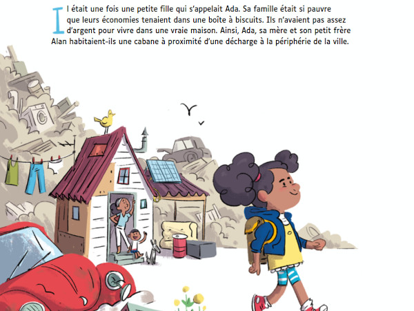
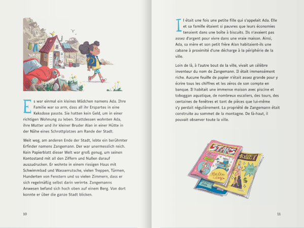

سفارش کتاب
امکان سفارش کتاب به زبان فارسی و همچنین نسخههای دو زبانه از طریق فروشگاه آنلاین شریک ما، انتشارات C&F وجود دارد.
برای سفارشهای گروهی میتوانید با آنها تماس بگیرید.
کتاب به زبان فارسی
مشخصات
- ویرایش فارسی: اِدا و زِنگمَن، داستانی درباره نرمافزار، اسکیتبرد و بستنی تمشک، انتشارات C&F 2023
- متن: ماتیاس کیرشنر
- تصویرگری: ساندرا براندشتتر
- ابعاد: 21 × 21 سانتیمتر - 56 صفحه - جلد سخت
- شابک: 978-2-37662-075-4 (نوامبر 2023)
همانند نسخه اصلی، این ترجمهها تحت مجوز کرییتیو کامنز منتشر شدهاند: انتساب-اشتراکگذاری تحت شرایط یکسان (CC BY-SA 4.0 FR).

کتاب به صورت دو زبانه
مشخصات
- ویرایش فارسی: اِدا و زِنگمَن، داستانی درباره نرمافزار، اسکیتبرد و بستنی تمشک، انتشارات C&F 2023
- متن: ماتیاس کیرشنر
- تصویرگری: ساندرا براندشتتر
- ابعاد: 13 × 21 سانتیمتر - 64 صفحه
- شابک: 978-2-37662-091-4 (فرانسوی-آلمانی)
- شابک: 978-2-37662-097-6 (فرانسوی-انگلیسی)
همانند نسخه اصلی، این ترجمهها تحت مجوز کرییتیو کامنز منتشر شدهاند: انتساب-اشتراکگذاری تحت شرایط یکسان (CC BY-SA 4.0 FR).
